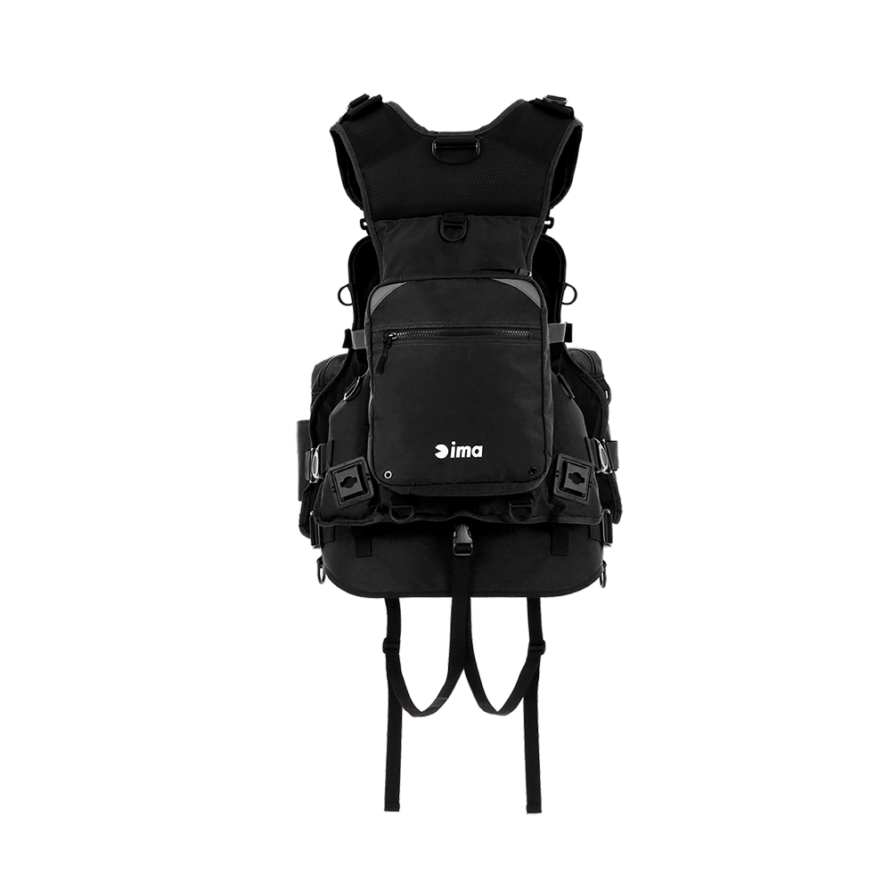
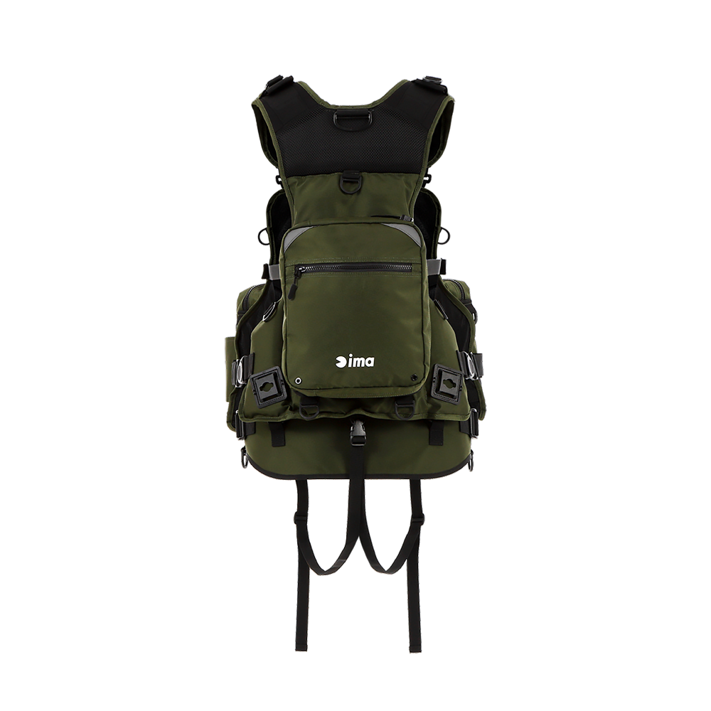

フローティングベスト X-0III
（ima ORIGINAL FLOATING VEST X-0III）
フローティングベスト X-0III（ima ORIGINAL FLOATING VEST X-0III）はima（アイマ）のフローティングベストです。
フローティングベストでアングラーが一番悩む「肩と腰にかかる負担による疲労感」を、ベストの形状をX型にすることで改善しようとした「X-0（エックスゼロ）」シリーズの3代目。着心地はそのままに、便利な追加機能と細部のブラッシュアップが加えられています。

画像出典:ima公式HP
スペック
- メーカー
- ima（アイマ）
- タイプ
- フローティングベスト
- サイズ
- フリー
- 浮力
- 7.5kg/24h
- 型式承認
- 桜マーク非対応
- 素材
- ポリエステル、クロロプレン
- カラー
- BLACK／GYOKURO
- 価格
- 30,800円（税込）
▼今すぐチェック
フローティングベスト X-0IIIの特徴
重さを体の中心に集めて疲れにくくする、X型のフローティングベスト
-
X型の形状で重量負担を体の中心に
ベストの形状をX型にすることで、重量負担を体の中心に集める設計。肩と腰にかかる負担を減らし、疲労感の軽減を目指している。
-
着心地はそのままに機能をプラス
先代モデルの着心地はそのままに、便利な追加機能と細部のブラッシュアップを加えた3代目モデル。
-
BLACKとGYOKUROの2色
カラーは定番のBLACKと、グリーン系のGYOKUROの2色展開。
フローティングベスト X-0IIIの使い方
着用したら、各ベルトで体に合わせてフィット感を調整します。X型の形状が重さを体の中心に集めるので、ルアーケースなどの装備を入れても肩や腰に負担がかかりにくくなります。
フローティングベスト X-0IIIのがおすすめの人
長時間歩き回るウェーディングや磯・サーフの釣りで、肩や腰の疲れが気になる人に向いたフローティングベストです。
装備をたくさん持ち歩くけれど、体への負担はできるだけ減らしたい人にオススメです。
ワンポイント
公式サイトでは「完売・再入荷は未定」と案内されています（2026年10月時点）。購入を考えている場合は、販売店の在庫を確認しましょう。
国土交通省の型式承認（桜マーク）には対応していません。船釣りなど、桜マーク付きのライフジャケットの着用が必要な場面では使えないので注意しましょう。
フローティングベスト X-0IIIの主な仕様
| 項目 | 仕様 | ポイント |
|---|---|---|
| 形状 | X型 | 重量負担を体の中心に集めて疲労を軽減 |
| サイズ | フリー | 各ベルトで調整 |
| 素材 | ポリエステル、クロロプレン | — |
| 浮力 | 7.5kg/24h | 桜マーク非対応（船釣りなど着用義務のある場面では使えない） |
| カラー | BLACK／GYOKURO | 2色展開 |
仕様は公式サイトの記載によるものです。最新の在庫は販売店で確認してください。
ディテール
フローティングベスト X-0IIIのディテールを紹介します。
フロント（BLACK）
X型のシルエットで、重さを体の中心に集める。

バック（BLACK）背面にもポケットとDリングを備える。

バック（GYOKURO）グリーン系のGYOKUROカラー。
画像出典:ima公式HP
フローティングベスト X-0IIIとあわせてチェックしたいアイテム
-
 ガネット Ver.2
アピア
詳細はこちら＞
ガネット Ver.2
アピア
詳細はこちら＞
アピアのフローティングベスト。浮力7.5kg/24h、バリスティック生地で軽さとタフさを両立したモデル。
-
 ウェーディングスタッフ
ima
詳細はこちら＞
ウェーディングスタッフ
ima
詳細はこちら＞
imaのワンピースのウェーディングスタッフ。114gと軽く水に浮き、ウェーディングの足元の安全確保に。
-
 タイタニュームフィットグローブ
ima
詳細はこちら＞
タイタニュームフィットグローブ
ima
詳細はこちら＞
imaの防寒フィッシンググローブ。冬のウェーディングや磯で手を守りたいときに。